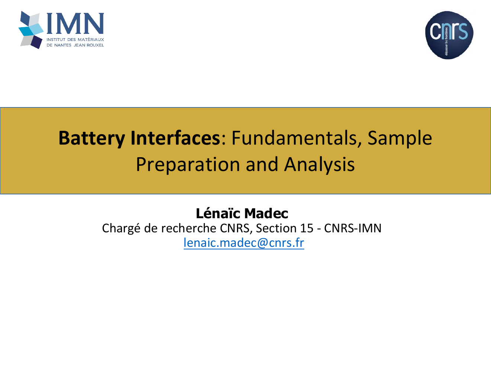

Resources
SEI & Surface Analysis
About these resourcesResources on the Solid Electrolyte Interphase (SEI), interfacial phenomena, sample preparation and surface-analysis methods for battery systems. The material is being developed progressively and some courses are still at an early draft stage.
In development
Battery Interfaces: Fundamentals, Sample Preparation and Analysis
Introduce interfacial phenomena in metal-ion batteries, the formation and essential properties of electrode interphases, and the main approaches used to prepare and analyze sensitive battery materials.

Open course slides — PDF ↗
Planned
Interphase Chemistry and Evolution Across Li-, Na- and K-Ion Batteries
Compare the chemistry, properties and evolution of electrode interphases in Li-, Na- and K-ion batteries, including their stability, dynamics and interactions between electrodes.
Course material to be added
Planned
Accessing Buried Interfaces: Cross-Sectional and Depth-Sensitive Analysis
Explore preparation and analysis strategies used to investigate buried and solid/solid interfaces, including cross-sectional imaging, surface-sensitive methods and profiling approaches, together with their limitations and artifacts.
Course material to be added